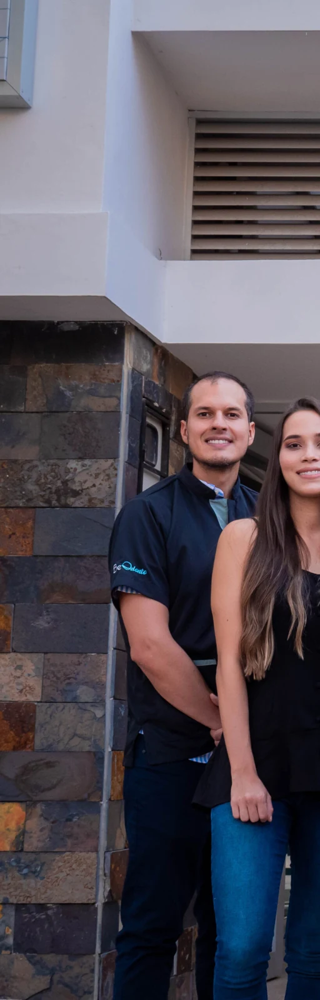
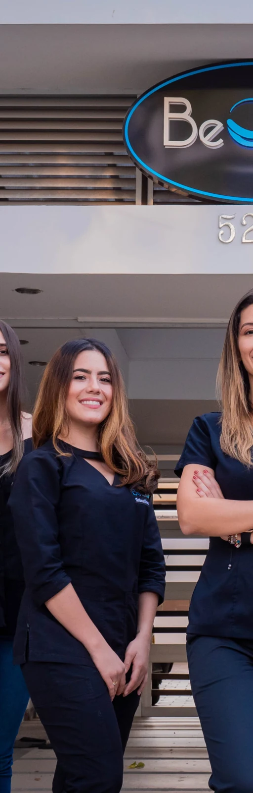
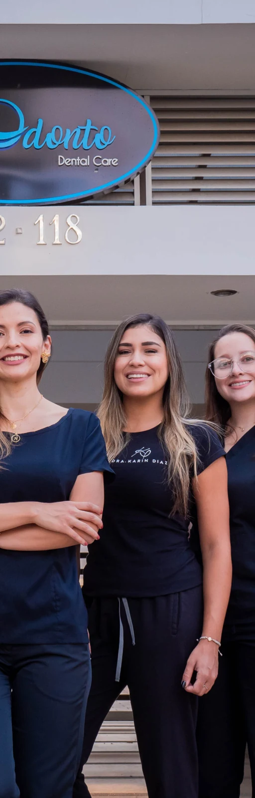
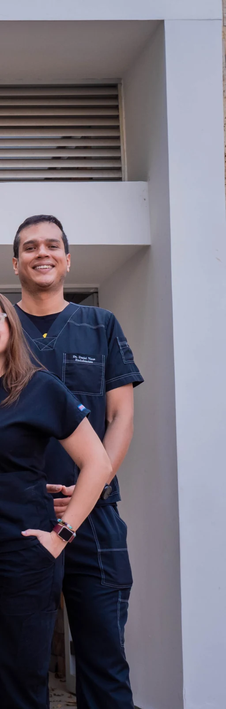
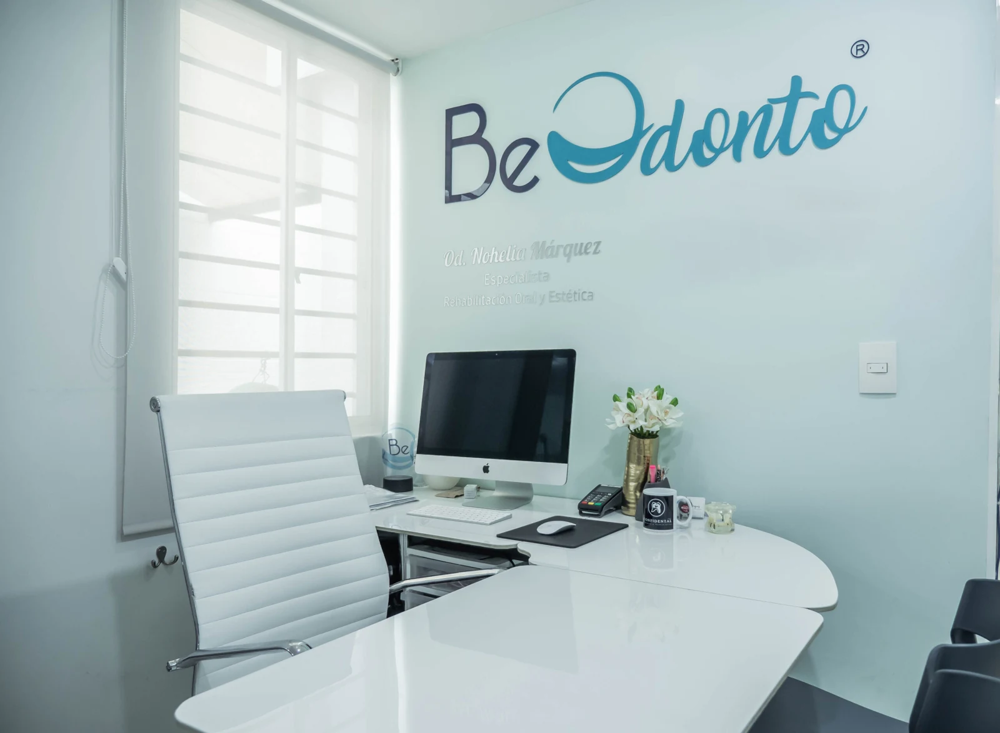

Restore your smile
A connected assessment of oral function and aesthetic goals.
Different specialties. One shared focus: caring for your smile.
Beodonto brings dental specialties together around oral rehabilitation. Dra. Nohelia Márquez and the team present an interdisciplinary approach to understanding your case.




The Beodonto team · Official practice photographs
A connected assessment of oral function and aesthetic goals.
The clinic presents rehabilitation, periodontics, orthodontics and other dental specialties.
Explore the first steps of a remote conversation before coordinating a visit.

Ask questions, understand the sequence of care and discuss the specialists your individual assessment may require.
Explore how a coordinator could help organise the first conversation and connect the right specialties.
No information is sent. Clinical suitability is decided by a professional.
Ask the practice about remote consultation, language and coordination for your individual case.
Your clinician determines the plan, visits and follow-up after assessment. Confirm this before arranging travel.
This is a demonstration of the proposed experience. No appointment is booked and no data is sent. Use the official channels for real availability.